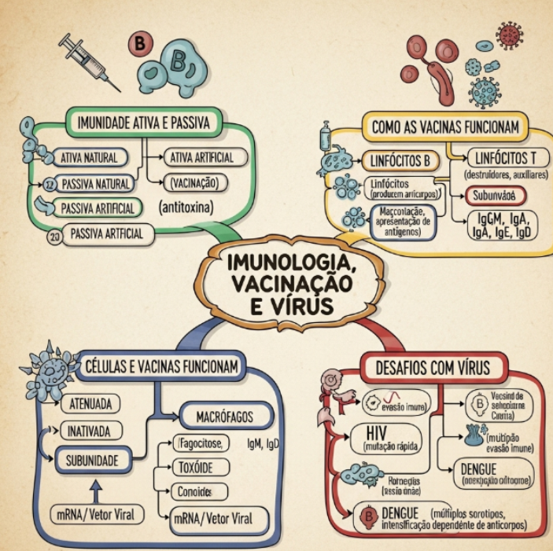
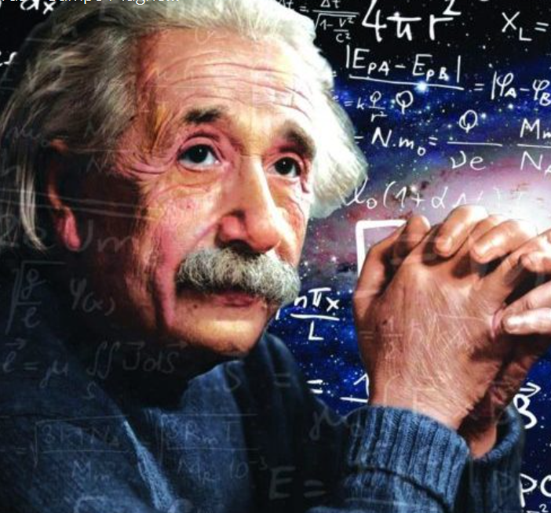

1° Trimestre:
Atividade Tipos de Poluição

Objetivo: Essa Atividade tem o objetivo de falar sobre um pouco dos tipos de poluições do nosso planeta.
Opinião: Eu achei a atividade bem legal, porque foi feita em grupo, e isso deixou a aula mais descontraída.
Habilidades: C1 - H1, H2 e H4
Mapa Mental Eletrostática

Objetivo: Criar um mapa mental sobre eletrostatica e revisar os principais conceitos da eletrostática, como carga elétrica, processos de eletrização, força elétrica, campo elétrico e potencial elétrico, promovendo uma compreensão integrada dos fenômenos.
Opinião: Eu achei a atividade bem generica, fazer um mapa mental no canva uma atividade bem repetitiva
Habilidades: H29, H30 e H31.
Atividade Estequiometria

Objetivo: Aplicar os conceitos fundamentais e estruturas procedimentais das Ciências da Natureza na explicação de fenômenos cotidianos, bem como dominar processos e práticas da investigação científica.
Opinião: Eu achei a atividade bem legal, mas um pouco genérica, pois foi parecida com as outras. Tirando isso, eu gostei."
Habilidades: C2 H7, H9 e H10.
Atividade de Autoria

Objetivo: Compreender as ciências naturais e as tecnologias como construções humanas associadas à cultura dos povos e suas visões de mundo.
Opinião: Eu achei bem legal mas genérica porque, fica muito repetitivo as atividades.
Habilidades: C2 H7, H9 e H10.
2° Trimestre
Sistemas Imunológicos
Objetivo:Criar uma mapa mental sobre Sistemas Imunológicos e vacinas.
Habilidades: C4 - H23
Glossario

Objetivo: Criar um glossário sobre eletroquimica e eletricidade
Habilidades: C2, H6, H7, H9.
Atividade Autoral
Objetivo: Criar um site explicando sobre Auroras e Campo Magnéticos
Habilidades: Não foi dito.